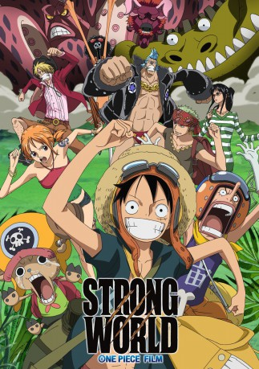

#2855 One Piece - Movie 10 - Strong World
Alternativ: One Piece: Strong World (Englischer Titel)
 
 IMDB-Wertung: 7.7 / 10
IMDB-Wertung: 7.7 / 10  Metascore: 0
Metascore: 0 
Nach 20 Jahren tritt wieder der legendäre Pirat Kinjishi no Shiki in Erscheinung, überzieht den Eastblue mit Angst und Schrecken und entführt Nami. Die Strohhutbande unternimmt alles um ihren Heimatozean und ihre Freundin zu retten
Jahr: 2009
Dauer: 115 Minuten
FSK:
Land: Japan Studio: EurozoomTonspuren: DTS - ,
Untertitel: Deutsch,
Auflösung: 1080p (1920x1080) Größe: 6522 MB
Genre: Action, Abenteuer, Fantasy, Animation/Trick
Regisseur: Munehisa Sakai
Drehbuch: Eiichiro Oda, Eiichiro Oda, Hirohiko Uesaka
Soundtrack: Shiroh Hamaguchi, Kôhei Tanaka
Darsteller:
Datei: X:\Kinder Anime\One Piece\One Piece Movies\One Piece - Movie 10 - Strong World (2009, FSK, 1920x1080).mkv seit 25.12.2015
Festplatte: Kinder-Filme+Trick
 Es gibt insgesamt 19 Filme in der Gruppe 'Kinder Anime\One Piece\One Piece Movies'
Es gibt insgesamt 19 Filme in der Gruppe 'Kinder Anime\One Piece\One Piece Movies'